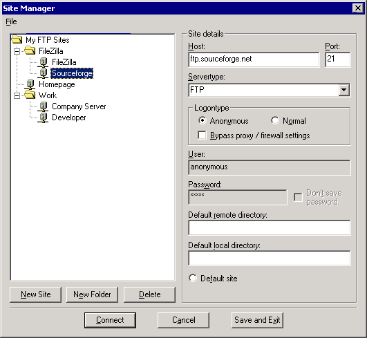

The Site Manager
Overview
The Site Manager manages a list of servers so that you can quickly connect to them. It stores their addresses and their logon information so that you don't have to remember all server details. FileZilla will do that for you.

Controls
There are a lot of controls on this dialog. Each of them is listed below with a description.
| Site List | - | Lists all sites that you've entered in the Site Manager and arranges them in a tree. Click on an entry to see or change its details. Double click an entry to connect to that site. |
| Host | - | This is the address of the server. |
| Port | - | The port at which the server is located. |
| Servertype | - | Here you can choose the type of the
server. Currently 3 server types are supported:
|
| User | - | The username that will be used for the logon on the server. |
| Password | - | The password that will be used for the logon on the server. Select Don't save password if you don't want FileZilla to remember your password for that site. In this case you will be asked for the password every time you want to connect to that site. Useful if you're not the only one who has access to your machine. |
| Logontype | - | Specifies the way in which FileZilla will connect to the server. If you select anonymous, you can't enter a username and password. In this case the username always is anonymous. When you select Normal, you have to enter a username and if required, a password. When the checkbox "Bypass proxy / firewall settings" is checked, then FileZilla bypasses any proxy or firewall settings that you've set in the options. Checking this could be required if you want to connect to servers in your LAN. |
| Default remote directory, Default local directory |
- | When you connect to a site, FileZilla switches both the local and the remote directory to the ones you have entered here. |
| Default site | - | When selected, the site selected in the site list is the default site. This site will be selected everytime you open the Site Manager. FileZilla will also connect to this site when you use "Connect to default Site" from the menu of the main window. |
| New Site | - | Creates a new entry in the list. Fill out the edit fields on the right and the new site is ready to use. |
| New Folder | - | Creates a new folder in the tree. Use folders to group your sites. |
| Delete | - | Deletes the selected entry from the site list after asking for confirmation. |
| Connect | - | Connects to the selected site and saves any changes. |
| Cancel | - | Discards all changes and closes the Site Manager. |
| Save and Exit | - | Saves all changes and closes the Site Manager. |
The menu
The Site Manager has a small menu from which you can import and export the Site Manager entries.
Your sites can be exported in two ways: as a simple URL list or with all details. In both cases you will be asked for the name of the text file into which your sites will be exported. In the first case, only the full URL (including port, username, password and remote directory) of the server gets saved. In the second case, all settings get exported.
When you select Import from the menu, you will be asked for a filename. FileZilla automatically detects whether the file contains any sites and if it is a URL list or a full detail list.